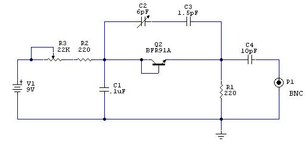
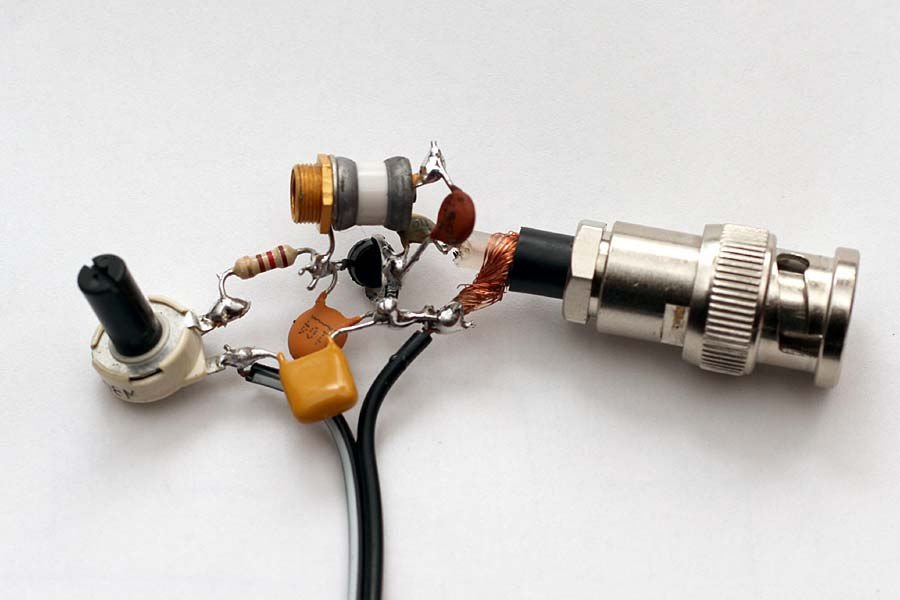
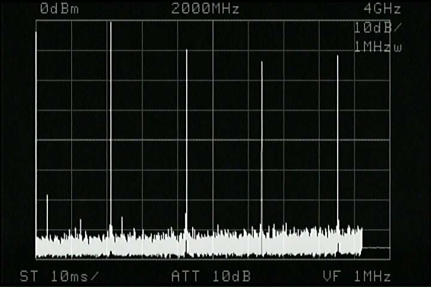
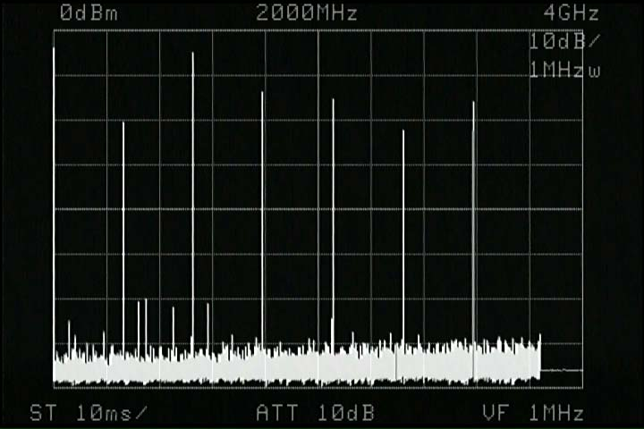
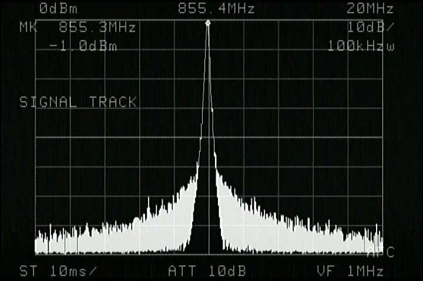
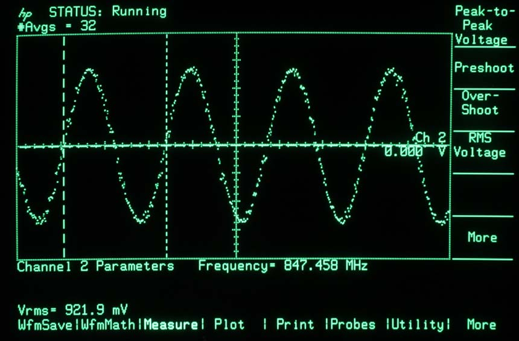
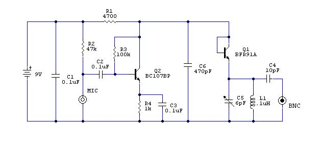

Radio & antenne
Effetto TUNNEL
Generatore microwave 1000 - 4000 MHz
Indice della pagina
Premessa
Ottobre 2013
A questo semplice generatore microonde, sono arrivato quasi per caso, stavo provando diversi transistor per trovare quello che emetteva la migliore banda HF in rumore bianco, e il BFR91A, transistor usato su amplificatori UHF, collegato in inversa non dava emissioni significative in HF, ma invertendolo e aumentando la corrente, di colpo ha iniziato a oscillare a 1500 MHz con un ottimo segnale e stabilità, ho pertanto modificato lo schema per sfruttare al meglio la sua emissione, chiamata appunto Effetto Tunnel, chiaramente ci sono dei diodi costruiti per lavorare in questa specifica modalità, ma usare il transistor è interessante, rimando ai seguenti siti per approfondimenti sull'effetto tunnel:
http://en.wikipedia.org/wiki/Tunnel_diode
http://it.wikipedia.org/wiki/Effetto_tunnel
I dispositivi per Effetto Tunnel sono tutti Diodi per RF ad altissima frequenza, maggiore di 1000 MHz ed arrivare a oltre 20 GHz. Vista la semplicità per ottenere segnale e alte frequenza, i diodi Tunnel sono usati anche per piccole microspie, trasmettitori boa, circuiti di piccole dimensioni e bassi consumi.
S chema elettrico

Per evitare interferenze il circuito dovrebbe essere posizionato all'interno di un contenitore metallico facente capo al connettore BNC o meglio SMA in quanto le frequenze armoniche generate possono arrivare a 10 GHz.
Viene usato il transistor BFR91A data sheet ma anche altri BJT amplificatori RF possono funzionare.
Da come si vede la base del BJT è collegata al collettore come fosse un solo diodo, con circa 1-2mA corrente il transistor, inizia ad oscillare in AF, aumentando la corrente fino a 25mA aumenta la potenza emessa e scende la frequenza fondamentale.
Non sono andato oltre i 25mA in quanto il transistor è da 50mA massimi ed è facile romperlo, con 25mA si ottengono già segnali da 0dB pari a 220mV su 50ohm niente male per un solo diodo.
Alimentazione con batteria 9V, la corrente viene regolata dal potenziometro R3, la corrente massima è data dalla R2 + R1, è possibile aumentare la potenza usando altri tipi di transistor o direttamente diodi Tunnel come il 1N3716 o altri...
Il condensatore C1 serve da blocco per la RF sul lato alimentazione, mentre la variazione della frequenza di emissione viene controllata dal C2 con valore da 1 a 10pf, non è così critico in quanto lo si può ripartire con la serie del C3 così da avere un valore minimo di 1pF.
Con questi valori l'escursione in uscita va da 800 MHz fino a 1500 MHz.
Dipende molto anche dalla capacità distribuita e dal tipo di supporto.
In questo caso il montaggio è stato fatto in aria, pertanto le capacità riferite a massa sono molto basse.
Per visualizzare la frequenza generata è necessario uno Spectrum Analyser, in quanto con oscilloscopio è un po’ difficile arrivarci.
La resistenza R1 rappresenta il carico RF e deve essere del tipo antinduttivo, facile quindi usare un componente SMD.
Al posto della R1 è possibile mettere un circuito risonante composto da un condensatore variabile e induttore, eliminando quindi C2 e C3, vengono però eliminate molte armoniche superiori che possono essere utili per circuiti accordati a frequenze molto più alte.
Eliminando il circuito capacitivo C2 e C3 la frequenza fondamentale è di circa 1500 MHz, che può ancora salire eliminando un po’ di capacità. Molto interessanti le armoniche che possono essere utilizzate per circuiti fino e oltre i 10 GHz....
Circuito assemblato in aria

Ecco il circuito assemblato in aria, è stato aggiunto un ulteriore condensatore ceramico sui terminali della batteria. Entrano ancora segnali radio e cellulari, ideale sistemare tutto dentro a un contenitore metallico e stare il più possibile vicini allo Spectrum Analyser.
La resistenza R1 è del tipo SMD, per evitare le resistenze avvolte che avrebbero avuto effetto induttivo, viste le frequenze in gioco.
Girando il trimmer si arriva al punto di innesco oscillazioni, dove la variazione di corrente provoca anche aumento di intensità e diminuzione della frequenza emessa, mentre con il trimmer capacitivo, si può variare la frequenza da 800 a 1600 MHz circa.
Interessante di questo circuito è la semplicità e la emissione di segnale che se collegato in antenna può arrivare a centinaia di metri (provato a 1280 MHz) il tutto con un solo componente attivo e nessuna bobina di accordo.
Verifica emissione uscita su 50 Ohm
Il carico di 50 Ohm è rappresentato dall'ingresso dello Spectrum Analyser, la connessione deve essere il più corta possibile

Questo è il segnale rilevato, con trimmer corrente al massimo e trimmer frequenza tutto aperto, dove la fondamentale è di 855 MHz, si vedono molto bene i segnali delle armoniche successive, 1710, 2565, 3420 MHz, e oltre...

Questo è il segnale rilevato, con trimmer corrente al massimo e trimmer frequenza tutto chiuso, dove la fondamentale è di 580 MHz, si vedono molto bene i segnali delle armoniche successive, fino a 2900 MHz, e oltre... In questo caso, il valore del condensatore C4 andrebbe portato a 30pF, in quanto la fondamentale, presenta meno ampiezza delle armoniche successive...

Questa è l'emissione fondamentale alimentando con 9V e trimmer corrente tutto chiuso, la corrente è di 22mA e il segnale di uscita è molto pulito. La larghezza di banda occupata è di quasi 1 MHz. Il trimmer cap C2 è tutto aperto.

Questa è l'uscita su carico 1Mohm vista con oscilloscopio HP 54100 otteniamo 0.92V rms ottimo segnale per entrare in un amplificatore RF ed incrementare il segnale prima di applicarlo a una antenna.
Applicazioni

Radiomicrofono a 900-1200 MHz
Questa è lo schema consigliato per fare un semplice microfono spia a 900 MHz.
Il segnale audio proveniente dal microfono a condensatore viene amplificato dal transistor Q2 ed applicato alla resistenza R1, tale resistenza fa anche da limitazione corrente per il diodo Tunnel per cui la leggera variazione di tensione dovuta al segnale audio, va a modificare la corrente del Q1 la conseguenza è la modulazione di frequenza del segnale RF.
Se non fosse abbastanza sensibile si può aggiungere un secondo stadio a transistor oppure un amplificatore regolabile come proposto nella pagina Utilizzo diverso dei led.
La bobina L1 è realizzata con 1, 2 o 3 spire a seconda della frequenza che si vuole ottenere in uscita, è da provare quale è meglio sul rendimento, regolando il C5.
Uno stadio amplificatore Classe A magari utilizzando lo stesso transistor BFR91 può dare incremento al segnale.
In caso di instabilità RF si può aggiungere una impedenza Vk200 tra il C6 il Q1.
© Roberto Chirio: all rights reserved.